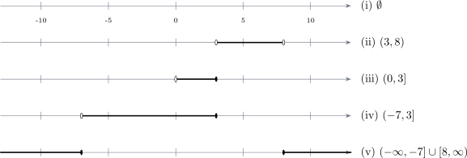

2.5 Practice problems
The remaining questions from Tutorial Sheet 1. Work each one before opening the solution.
Problem 2.1. [Tutorial Sheet 1] Let \(\mathbb {R}\) be the universal set.
- Rewrite each of the following in set-builder notation: (i) \(A=(-5,3)\), (ii) \(B=(4,7]\), (iii) \(C=[0,4]\), (iv) \(D=[-2,6)\).
- With \(A=(-7,3]\), \(B=(0,8)\) and \(C=\{x: x\leq 10,\ x\in \mathbb {R}\}\), find each of the following and illustrate on a number line: (i) \(A\cap C^c\), (ii) \(B-A\), (iii) \(A\cap \left (B\cup C^c\right )\), (iv) \(\left [A^c-(B-C)\right ]^c\), (v) \(A^c\cap B^c\).
Show solution
Solution. (a). A round bracket excludes its endpoint and a square bracket includes it, which becomes \(<\) and \(\leq \) respectively. \[\text {(i) } A=\{x: -5<x<3,\ x\in \mathbb {R}\}\] \[\text {(ii) } B=\{x: 4<x\leq 7,\ x\in \mathbb {R}\}\] \[\text {(iii) } C=\{x: 0\leq x\leq 4,\ x\in \mathbb {R}\}\] \[\text {(iv) } D=\{x: -2\leq x<6,\ x\in \mathbb {R}\}\]
(b). First write \(C\) as an interval. It is everything up to and including \(10\): \[C=(-\infty ,10],\qquad \text {so}\qquad C^c=(10,\infty ).\] Note the bracket flips: \(10\) belongs to \(C\), so it does not belong to \(C^c\).
(i). \(A=(-7,3]\) stops at \(3\), while \(C^c\) starts after \(10\). They share nothing: \[A\cap C^c=\emptyset .\]
(ii). \(B-A\) keeps the part of \(B=(0,8)\) lying outside \(A=(-7,3]\). The overlap runs from \(0\) to \(3\) inclusive of \(3\), so removing it leaves everything above \(3\): \[B-A=(3,8).\] The endpoint \(3\) is excluded because \(3\in A\) and \(A\) is being removed.
(iii). First the bracket: \[B\cup C^c=(0,8)\cup (10,\infty ),\] which cannot be merged into a single interval since the gap \([8,10]\) is missing. Now intersect with \(A=(-7,3]\). The second piece is far to the right and contributes nothing; the first overlaps \(A\) between \(0\) and \(3\): \[A\cap \left (B\cup C^c\right )=(0,3].\]
(iv). Work from the inside out. First \[B-C=(0,8)-(-\infty ,10]=\emptyset ,\] because the whole of \(B\) lies below \(10\) and so is entirely inside \(C\). Then \[A^c-\emptyset =A^c,\] since removing nothing changes nothing, and finally \[\left (A^c\right )^c=A=(-7,3].\]
(v). By De Morgan this is \((A\cup B)^c\). Since \(A=(-7,3]\) and \(B=(0,8)\) overlap, their union joins up: \[A\cup B=(-7,8),\] \[A^c\cap B^c=(A\cup B)^c=(-\infty ,-7]\cup [8,\infty ).\]
Number lines.

Note 2.17. Endpoints are where marks are lost. Whenever a set is subtracted or complemented, every \(<\) becomes \(\geq \) and every \(\leq \) becomes \(>\) at that endpoint. In (ii) the point \(3\) is in \(A\), so removing \(A\) removes \(3\) as well and the answer opens at \(3\); in (v) the point \(8\) is not in \(B\), so it survives into the complement and the answer closes at \(8\).
Problem 2.2. [Tutorial Sheet 1] Let \(\mathbb {R}\) be the universal set, \(A=(-7,3]\) and \(B=(0,8)\). Illustrate De Morgan’s laws using \(A\) and \(B\).
Show solution
Solution. There are two laws, and each is checked by working out both sides separately and comparing.
First law: \((A\cup B)^c=A^c\cap B^c\).
Left-hand side. \(A\cup B=(-7,3]\cup (0,8)=(-7,8)\), since the two intervals overlap between \(0\) and \(3\). Hence \[(A\cup B)^c=(-\infty ,-7]\cup [8,\infty ).\]
Right-hand side. \[A^c=(-\infty ,-7]\cup (3,\infty ),\qquad B^c=(-\infty ,0]\cup [8,\infty ).\] Intersecting these means taking the points common to both. Below \(-7\) both hold; between \(-7\) and \(0\) only \(B^c\) holds; between \(3\) and \(8\) only \(A^c\) holds; from \(8\) upwards both hold again. So \[A^c\cap B^c=(-\infty ,-7]\cup [8,\infty ).\]
The two sides agree. \(\checkmark \)
Second law: \((A\cap B)^c=A^c\cup B^c\).
Left-hand side. \(A\cap B=(-7,3]\cap (0,8)=(0,3]\), so \[(A\cap B)^c=(-\infty ,0]\cup (3,\infty ).\]
Right-hand side. Taking the union of \(A^c\) and \(B^c\) from above, everything below \(0\) is covered by \(B^c\) and everything above \(3\) by \(A^c\), leaving only \((0,3]\) uncovered: \[A^c\cup B^c=(-\infty ,0]\cup (3,\infty ).\]
The two sides agree. \(\checkmark \)
Note 2.18. In words: the complement of a union is the intersection of the complements, and the complement of an intersection is the union of the complements. The operation flips when it passes through the complement sign, and that flip is the whole content of both laws.
Problem 2.3. [Tutorial Sheet 1] Express each of the following in the form \(\frac {a}{b}\), where \(a,b\in \mathbb {Z}\), \(b\neq 0\), and the fraction is in its simplest form. (i) \(1.25\), (ii) \(0.666\cdots \), (iii) \(2.24\overline {13}\), (iv) \(0.818181818\cdots \), (v) \(-2.\overline {71}\), (vi) \(0.0\overline {321}\).
Show solution
Solution. A terminating decimal is written straight down over a power of ten. A recurring one needs the standard trick: multiply by powers of ten so that two copies have the same recurring tail, then subtract to cancel it.
(i). Terminating, two decimal places: \[1.25=\frac {125}{100}=\frac {5}{4}.\]
(ii). Let \(x=0.666\cdots \), with one recurring digit. Multiply by \(10\): \[10x=6.666\cdots \] \[10x-x=6.666\cdots -0.666\cdots =6\] \[9x=6\quad \implies \quad x=\frac {6}{9}=\frac {2}{3}.\]
(iii). \(x=2.24131313\cdots \). Here two digits (\(24\)) come before the recurring part and two digits (\(13\)) recur. Multiply by \(10^2\) to clear the non-recurring part, and by \(10^{2+2}\) to move one whole cycle further: \[100x=224.131313\cdots ,\qquad 10000x=22413.131313\cdots \] Subtracting kills the identical tails: \[9900x=22413-224=22189\quad \implies \quad x=\frac {22189}{9900}.\] Since \(22189\) is prime, no cancelling is possible and this is already simplest.
(iv). \(x=0.818181\cdots \), two recurring digits: \[100x=81.8181\cdots \] \[99x=81\quad \implies \quad x=\frac {81}{99}=\frac {9}{11}.\]
(v). Deal with the size first and put the sign back at the end. Let \(x=2.717171\cdots \): \[100x=271.7171\cdots \] \[99x=271-2=269\quad \implies \quad x=\frac {269}{99},\] \[\therefore \quad -2.\overline {71}=-\frac {269}{99}.\]
(vi). \(x=0.0321321321\cdots \), with one digit (\(0\)) before the recurrence and three digits (\(321\)) recurring: \[10x=0.321321\cdots ,\qquad 10000x=321.321321\cdots \] \[9990x=321\quad \implies \quad x=\frac {321}{9990}=\frac {107}{3330},\] after dividing numerator and denominator by \(3\).
Note 2.19. The number of \(9\)s in the denominator equals the number of recurring digits, and each non-recurring decimal place adds a \(0\) after them. Two recurring digits with none before gives \(99\), as in (iv); three recurring digits with one before gives \(9990\), as in (vi); two and two gives \(9900\), as in (iii). Recognising the pattern is a useful check on the subtraction.
Note 2.20. The fact that every one of these is a fraction of whole numbers is exactly what makes them rational numbers. A decimal that neither terminates nor recurs — such as \(\pi \) or \(\sqrt {2}\) — cannot be caught by this method, and is irrational.
Problem 2.4. [Tutorial Sheet 1] Simplify each of the following. (i) \(\sqrt {36}+\sqrt {64}\), (ii) \(7\sqrt {3}+\sqrt {12}\), (iii) \(\sqrt {20}+2\sqrt {45}-\sqrt {80}\), (iv) \(3\sqrt {27}-\sqrt {48}+2\sqrt {75}\), (v) \(\sqrt {72}-8\sqrt {3}+3\sqrt {48}\), (vi) \(\frac {3\sqrt {28}}{2\sqrt {175}}\).
Show solution
Solution. The method throughout is to pull the largest square factor out of each root, after which like terms can be collected.
(i). Both are exact squares: \[\sqrt {36}+\sqrt {64}=6+8=14.\]
(ii). \(12=4\times 3\), so \(\sqrt {12}=2\sqrt {3}\): \[7\sqrt {3}+2\sqrt {3}=9\sqrt {3}.\]
(iii). Break each root down to a multiple of \(\sqrt {5}\): \[\sqrt {20}=\sqrt {4\times 5}=2\sqrt {5},\qquad \sqrt {45}=\sqrt {9\times 5}=3\sqrt {5},\qquad \sqrt {80}=\sqrt {16\times 5}=4\sqrt {5}.\] \[\therefore \quad 2\sqrt {5}+2(3\sqrt {5})-4\sqrt {5}=2\sqrt {5}+6\sqrt {5}-4\sqrt {5} =4\sqrt {5}.\]
(iv). All three reduce to multiples of \(\sqrt {3}\): \[\sqrt {27}=3\sqrt {3},\qquad \sqrt {48}=4\sqrt {3},\qquad \sqrt {75}=5\sqrt {3}.\] \[\therefore \quad 3(3\sqrt {3})-4\sqrt {3}+2(5\sqrt {3})=9\sqrt {3}-4\sqrt {3}+10\sqrt {3} =15\sqrt {3}.\]
(v). This time two different surds appear: \[\sqrt {72}=\sqrt {36\times 2}=6\sqrt {2},\qquad \sqrt {48}=4\sqrt {3}.\] \[\sqrt {72}-8\sqrt {3}+3\sqrt {48}=6\sqrt {2}-8\sqrt {3}+12\sqrt {3}=6\sqrt {2}+4\sqrt {3}.\] The \(\sqrt {2}\) and \(\sqrt {3}\) terms cannot be combined, so this is the final answer.
(vi). Simplify each root before dividing: \[\sqrt {28}=2\sqrt {7},\qquad \sqrt {175}=\sqrt {25\times 7}=5\sqrt {7}.\] \[\frac {3\sqrt {28}}{2\sqrt {175}}=\frac {3\left (2\sqrt {7}\right )}{2\left (5\sqrt {7}\right )} =\frac {6\sqrt {7}}{10\sqrt {7}}=\frac {6}{10}=\frac {3}{5}.\] The surds cancel completely, leaving a rational number.
Note 2.21. Only like surds may be added, exactly as with algebraic terms: \(6\sqrt {2}\) and \(4\sqrt {3}\) can no more be combined than \(6a\) and \(4b\). Writing \(6\sqrt {2}+4\sqrt {3}= 10\sqrt {5}\) is the error to guard against — and it is easy to spot, since \(6\sqrt {2}+4\sqrt {3}\approx 15.4\) while \(10\sqrt {5}\approx 22.4\).
Problem 2.5. [Tutorial Sheet 1] Rationalise the denominator in each of the following. (i) \(\frac {3}{\sqrt {5}}\), (ii) \(\frac {2}{3-\sqrt {3}}\), (iii) \(\frac {3\sqrt {2}}{2+\sqrt {5}}\), (iv) \(\frac {\sqrt {3}-\sqrt {7}}{\sqrt {3}+\sqrt {7}}\), (v) \(\frac {x-y}{\sqrt {x}-\sqrt {y}}\), (vi) \(\frac {h}{\sqrt {x+h}-\sqrt {x}}\).
Show solution
Solution. For a single surd, multiply top and bottom by that surd. For a two-term denominator, multiply by its conjugate — the same expression with the middle sign reversed — because \((a-b)(a+b)=a^2-b^2\) removes the roots.
(i). \[\frac {3}{\sqrt {5}}\times \frac {\sqrt {5}}{\sqrt {5}}=\frac {3\sqrt {5}}{5}.\]
(ii). The conjugate of \(3-\sqrt {3}\) is \(3+\sqrt {3}\): \[\frac {2}{3-\sqrt {3}}\times \frac {3+\sqrt {3}}{3+\sqrt {3}} =\frac {2\left (3+\sqrt {3}\right )}{9-3}=\frac {2\left (3+\sqrt {3}\right )}{6} =\frac {3+\sqrt {3}}{3}.\]
(iii). The conjugate of \(2+\sqrt {5}\) is \(2-\sqrt {5}\), and note that \(4-5=-1\): \[\frac {3\sqrt {2}}{2+\sqrt {5}}\times \frac {2-\sqrt {5}}{2-\sqrt {5}} =\frac {3\sqrt {2}\left (2-\sqrt {5}\right )}{4-5} =\frac {6\sqrt {2}-3\sqrt {10}}{-1}=3\sqrt {10}-6\sqrt {2}.\] The negative denominator flips both signs, which is easy to overlook.
(iv). Multiply top and bottom by \(\sqrt {3}-\sqrt {7}\): \[\frac {\sqrt {3}-\sqrt {7}}{\sqrt {3}+\sqrt {7}}\times \frac {\sqrt {3}-\sqrt {7}}{\sqrt {3}-\sqrt {7}} =\frac {\left (\sqrt {3}-\sqrt {7}\right )^2}{3-7}.\] Expanding the numerator, \[\left (\sqrt {3}-\sqrt {7}\right )^2=3-2\sqrt {21}+7=10-2\sqrt {21},\] so \[=\frac {10-2\sqrt {21}}{-4}=\frac {2\sqrt {21}-10}{4}=\frac {\sqrt {21}-5}{2}.\]
(v). The conjugate of \(\sqrt {x}-\sqrt {y}\) is \(\sqrt {x}+\sqrt {y}\): \[\frac {x-y}{\sqrt {x}-\sqrt {y}}\times \frac {\sqrt {x}+\sqrt {y}}{\sqrt {x}+\sqrt {y}} =\frac {(x-y)\left (\sqrt {x}+\sqrt {y}\right )}{x-y}=\sqrt {x}+\sqrt {y},\] cancelling the factor \(x-y\) top and bottom.
(vi). \[\frac {h}{\sqrt {x+h}-\sqrt {x}}\times \frac {\sqrt {x+h}+\sqrt {x}}{\sqrt {x+h}+\sqrt {x}} =\frac {h\left (\sqrt {x+h}+\sqrt {x}\right )}{(x+h)-x} =\frac {h\left (\sqrt {x+h}+\sqrt {x}\right )}{h}=\sqrt {x+h}+\sqrt {x}.\]
Note 2.22. Part (vi) is not an idle exercise. Turn it upside down and it becomes \[\frac {\sqrt {x+h}-\sqrt {x}}{h}=\frac {1}{\sqrt {x+h}+\sqrt {x}},\] which is precisely the manipulation needed to differentiate \(\sqrt {x}\) from first principles. Before the surd is rationalised, letting \(h\to 0\) gives \(\frac {0}{0}\); after, it gives \(\frac {1}{2\sqrt {x}}\) at once.
Problem 2.6. [Tutorial Sheet 1] Rationalise the denominator and simplify. (i) \(\frac {4}{\sqrt {2}}+\sqrt {8}\), (ii) \(\frac {8}{3+\sqrt {5}}+\sqrt {45}\), (iii) \(\frac {\sqrt {3}-\sqrt {7}}{\sqrt {3}+\sqrt {7}}+\sqrt {21}\).
Show solution
Solution. (i). Rationalise the first term and simplify the second: \[\frac {4}{\sqrt {2}}=\frac {4\sqrt {2}}{2}=2\sqrt {2},\qquad \sqrt {8}=2\sqrt {2}.\] \[\therefore \quad 2\sqrt {2}+2\sqrt {2}=4\sqrt {2}.\]
(ii). The conjugate of \(3+\sqrt {5}\) is \(3-\sqrt {5}\), and \(9-5=4\): \[\frac {8}{3+\sqrt {5}}\times \frac {3-\sqrt {5}}{3-\sqrt {5}} =\frac {8\left (3-\sqrt {5}\right )}{4}=2\left (3-\sqrt {5}\right )=6-2\sqrt {5}.\] Also \(\sqrt {45}=3\sqrt {5}\). Adding: \[6-2\sqrt {5}+3\sqrt {5}=6+\sqrt {5}.\]
(iii). The first term was rationalised in the previous question to \(\frac {\sqrt {21}-5}{2}\). Adding \(\sqrt {21}\) over a common denominator: \[\frac {\sqrt {21}-5}{2}+\sqrt {21}=\frac {\sqrt {21}-5+2\sqrt {21}}{2} =\frac {3\sqrt {21}-5}{2}.\]
Note 2.23. Rationalise first, then combine. Attempting to add \(\frac {8}{3+\sqrt {5}}\) to \(\sqrt {45}\) over a common denominator before clearing the surd produces a far messier expression that has to be rationalised in the end anyway.
Problem 2.7. [Tutorial Sheet 1]
- Simplify, leaving each answer in the standard form \(a+bi\) with \(a,b\in \mathbb {R}\): (i) \((2+3i)-(-7+6i)\), (ii) \((3+4i)+(6-5i)\), (iii) \((-2+3i)^2\), (iv) \((2+i)(-1+2i)(4-3i)\), (v) \(\frac {2-3i}{1-2i}\), (vi) \(\frac {(-2+3i)^2}{1+2i}\).
- Simplify (i) \(i^{11}\), (ii) \(i^{102}\), (iii) \(i^{250}\), (iv) \(i^{900}\).
Show solution
Solution. Throughout, \(i^2=-1\) is the only new fact; everything else is ordinary algebra.
(a)(i). Subtracting a bracket changes both signs inside it: \[(2+3i)-(-7+6i)=2+3i+7-6i=9-3i.\]
(ii). Collect real with real and imaginary with imaginary: \[(3+4i)+(6-5i)=(3+6)+(4-5)i=9-i.\]
(iii). Expand as a square, then replace \(i^2\) by \(-1\): \[(-2+3i)^2=4-12i+9i^2=4-12i-9=-5-12i.\]
(iv). Multiply two factors at a time: \[(2+i)(-1+2i)=-2+4i-i+2i^2=-2+3i-2=-4+3i.\] \[(-4+3i)(4-3i)=-16+12i+12i-9i^2=-16+24i+9=-7+24i.\]
(v). To divide, multiply top and bottom by the conjugate of the denominator. The conjugate of \(1-2i\) is \(1+2i\), and \((1-2i)(1+2i)=1+4=5\): \[\frac {2-3i}{1-2i}\times \frac {1+2i}{1+2i}=\frac {2+4i-3i-6i^2}{5} =\frac {2+i+6}{5}=\frac {8+i}{5}=\frac {8}{5}+\frac {1}{5}i.\]
(vi). The numerator was found in (iii) to be \(-5-12i\). The conjugate of \(1+2i\) is \(1-2i\), and \((1+2i)(1-2i)=5\): \[\frac {-5-12i}{1+2i}\times \frac {1-2i}{1-2i}=\frac {-5+10i-12i+24i^2}{5} =\frac {-5-2i-24}{5}=\frac {-29-2i}{5}=-\frac {29}{5}-\frac {2}{5}i.\]
(b). The powers of \(i\) repeat in a cycle of four: \[i^1=i,\qquad i^2=-1,\qquad i^3=-i,\qquad i^4=1,\] and then the pattern begins again. So divide the index by \(4\) and keep only the remainder.
\[\text {(i) } 11=4(2)+3\quad \implies \quad i^{11}=i^3=-i.\] \[\text {(ii) } 102=4(25)+2\quad \implies \quad i^{102}=i^2=-1.\] \[\text {(iii) } 250=4(62)+2\quad \implies \quad i^{250}=i^2=-1.\] \[\text {(iv) } 900=4(225)+0\quad \implies \quad i^{900}=i^0=1.\]
Note 2.24. For (b) there is no need to work out the power itself — only the remainder on division by \(4\) matters. A remainder of \(0\) gives \(1\), of \(1\) gives \(i\), of \(2\) gives \(-1\) and of \(3\) gives \(-i\).
Problem 2.8. [Tutorial Sheet 1] Given \(z_1=3-2i\), \(z_2=-1+i\) and \(z_3=3+2i\), evaluate each of the following, leaving the answer in the form \(a+bi\): (i) \(\frac {2z_1-5z_3}{\bar {z_3}}\), (ii) \(\frac {\bar {z_2}z_1}{z_3}\), (iii) \(\frac {\left (z_2\right )^2}{\bar {z_1}}\).
Show solution
Solution. First write down the conjugates, obtained by changing the sign of the imaginary part: \[\bar {z_1}=3+2i,\qquad \bar {z_2}=-1-i,\qquad \bar {z_3}=3-2i.\]
(i). Numerator first: \[2z_1-5z_3=2(3-2i)-5(3+2i)=(6-4i)-(15+10i)=-9-14i.\] Divide by \(\bar {z_3}=3-2i\), multiplying top and bottom by its conjugate \(3+2i\). Note \((3-2i)(3+2i)=9+4=13\): \[\frac {-9-14i}{3-2i}\times \frac {3+2i}{3+2i}=\frac {-27-18i-42i-28i^2}{13} =\frac {-27-60i+28}{13}=\frac {1-60i}{13}=\frac {1}{13}-\frac {60}{13}i.\]
(ii). Numerator first: \[\bar {z_2}z_1=(-1-i)(3-2i)=-3+2i-3i+2i^2=-3-i-2=-5-i.\] Divide by \(z_3=3+2i\), using the conjugate \(3-2i\) and \((3+2i)(3-2i)=13\): \[\frac {-5-i}{3+2i}\times \frac {3-2i}{3-2i}=\frac {-15+10i-3i+2i^2}{13} =\frac {-15+7i-2}{13}=\frac {-17+7i}{13}=-\frac {17}{13}+\frac {7}{13}i.\]
(iii). Numerator first: \[\left (z_2\right )^2=(-1+i)^2=1-2i+i^2=1-2i-1=-2i.\] Divide by \(\bar {z_1}=3+2i\): \[\frac {-2i}{3+2i}\times \frac {3-2i}{3-2i}=\frac {-6i+4i^2}{13}=\frac {-4-6i}{13} =-\frac {4}{13}-\frac {6}{13}i.\]
Note 2.25. Here \(z_3=3+2i\) happens to be the conjugate of \(z_1=3-2i\), so \(\bar {z_3}=z_1\) and \(\bar {z_1}=z_3\). Noticing that at the start halves the writing. It also explains why every denominator came out as \(13\): in each case the product was \((3+2i)(3-2i)=3^2+2^2\).
Problem 2.9. [Tutorial Sheet 1]
- Solve for the real numbers \(x\) and \(y\): (i) \(x+6+2yi=6-5i\), (ii) \(4x+(3y+4)i=21+7i\), (iii) \(6+3i=4i-30(x+yi)\).
- Given that \(\frac {5-2i}{z}=2+i\), find \(z\) in the form \(a+bi\).
Show solution
Solution. Two complex numbers are equal precisely when their real parts are equal and their imaginary parts are equal. Each equation therefore splits into two real equations.
(a)(i). Comparing real parts and then imaginary parts: \[x+6=6\quad \implies \quad x=0,\] \[2y=-5\quad \implies \quad y=-\frac {5}{2}.\]
(ii). \[4x=21\quad \implies \quad x=\frac {21}{4},\] \[3y+4=7\quad \implies \quad 3y=3\quad \implies \quad y=1.\]
(iii). First expand the right-hand side and gather it into the form \(a+bi\): \[4i-30(x+yi)=-30x+(4-30y)i.\] Now compare with the left-hand side \(6+3i\): \[-30x=6\quad \implies \quad x=-\frac {1}{5},\] \[4-30y=3\quad \implies \quad 30y=1\quad \implies \quad y=\frac {1}{30}.\]
(b). Rearranging, \[z=\frac {5-2i}{2+i}.\] Multiply top and bottom by the conjugate \(2-i\), with \((2+i)(2-i)=4+1=5\): \[z=\frac {(5-2i)(2-i)}{5}=\frac {10-5i-4i+2i^2}{5}=\frac {10-9i-2}{5}=\frac {8-9i}{5},\] \[\therefore \quad z=\frac {8}{5}-\frac {9}{5}i.\]
Check. Multiplying back, \[\left (\frac {8-9i}{5}\right )(2+i)=\frac {16+8i-18i-9i^2}{5}=\frac {16-10i+9}{5} =\frac {25-10i}{5}=5-2i.\ \checkmark \]
Note 2.26. In (iii) the expansion must be done before comparing parts. Reading off \(6=4i\) and \(3i=-30(x+yi)\), as though the terms could be matched in the order written, gives nonsense — the real part of the right-hand side is \(-30x\), which is not visible until the bracket is multiplied out.